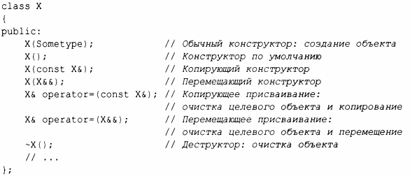
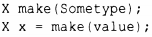
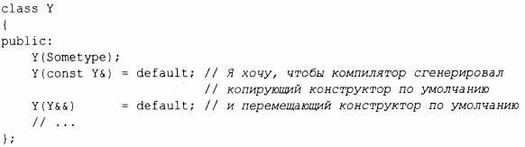
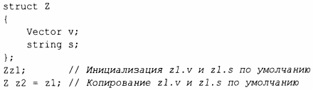
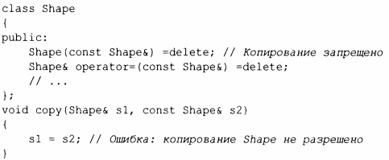

⇐5.1 Введение Содержание 5.1.2 Преобразования типов⇒
Построение объектов играет ключевую роль во многих nроектах. Широкий сnектр их nрименения отражается в диаnазоне и гибкости языковых возможностей для nоддержки инициализации.
Конструкторы, деструкторы, оnерации коnирования и nеремещения для тиnа логически нераздельны. Мы должны оnределять их как согласованный набор или в nротивном случае страдать от логических проблем или проблем с nроизводительностью. Если класс Х имеет деструктор, который выnолняет нетривиальную задачу, такую как освобождение nамяти или блокировки, классу, вероятно, nотребуется nолный набор функций:
Имеется nять ситуаций, когда объект может быть скоnирован или nеремещен: когда он выстуnает в роли
Присваивание исnользует оnератор коnирующего или nеремещающего nрисваивания. В nринциnе, в других случаях исnользуется копирующий или nеремещающий конструктор. Однако вызов коnирующего или nеремещающего конструктора часто отбрасывается при оnтимизации nутем конструирования объекта, исnользуемого для инициализации сnрава, непосредственно в целевом объекте. Наnример:
В этой ситуации компилятор обычно создает Х из make() непосредственно в х, тем самым отменяя (аннулируя) копирование (сору elision).
В дополнение к инициализации именованных объектов и объектов в свободной памяти конструкторы используются для инициализации временных объектов и для реализации явного преобразования типов.
За исключением "обычного конструктора", эти специальные функции-члены генерируются компилятором по мере необходимости. Если вы хотите явно затребовать генерацию реализаций по умолчанию, можете сделать это следующим образом:
Если вы явным образом указали генерацию некоторых специальных функций по умолчанию, то прочие определения по умолчанию генерироваться не будут
Если у класса есть член-указатель, обычно рекомендуется явно записывать операции копирования и перемещения. Причина в том, что указатель может указывать на нечто, что класс должен удалить, и в этом случае выполняемое по умолчанию почленное копирование будет неправильным. Или напротив - член может указывать на то, что класс не должен удалять. В любом случае читателю кода хотелось бы это точно знать. Пример можно найти в §5.2.1.
Хорошее эмпирическое правило (иногда называемое правwюм нуля) состоит в том, чтобы определить либо все основные операции, либо ни одну из них (используя генерацию по умолчанию для всех них). Например:
В этом случае компилятор при необходимости будет генерировать почленные конструктор, копирующий конструктор, перемещающий конструктор и деструктор по умолчанию, и все они будут иметь правильную семантику.
В дополнение к = default имеется конструкция = delete, указывающая, что данная операция не должна генерироваться. Базовый класс в иерархии классов является классическим примером того, где не следует разрешать почленное копирование. Например:
Конструкция = delete приводит к тому, что попытка использования удаленной функции является ошибкой времени компиляции; = delete может использоваться для подавления любой функции, а не только важных функций-членов.